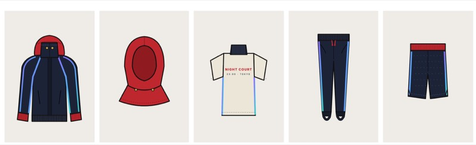
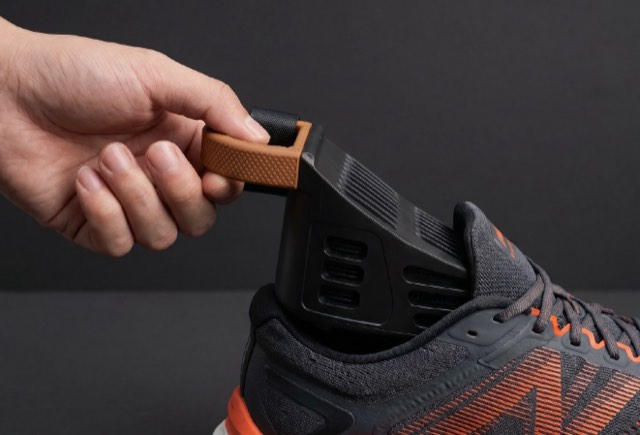

05 / 06Night CourtSelf-initiated concept · Apparel · In development2026
ナイトコートNight Court
From a late pickup game straight into the city.
A unisex streetball warm-up capsule for players who go from a late pickup game straight into the city. The silhouettes take their cue from shōnen anime school uniforms: a tall stand collar, a bright hood layered underneath, and ink-dark fabric that flashes violet and teal under the floodlights. Hero confidence, cut as real sportswear.
- My role
- Concept and story, vector flats, trims and colour
- Type
- Apparel concept
- Status
- In development
- Hero piece
- High-collar warm-up jacket

01Hero piece
High-collar warm-up jacket.
A school-uniform collar on a basketball warm-up. Every detail borrowed from the anime silhouette also has a job to do on court.
- Tall stand collar
- Rises to the chin, closed with two brass snaps
- Layered hood
- Signal-red jersey hood that sits inside the collar
- Rib cuffs
- Red, so the hood colour repeats at the wrist
- Iridescent tape
- Violet-to-teal reflective seam tape catches court lights
- Concealed zip
- Clean front under a storm flap
- Boxy, hip length
- Room to shoot in, sharp on the street

02Line-up · 23:00 · Tokyo
Five pieces, one story.
Every piece keeps a basketball base (tricot, mesh, ribbing) and borrows one anime-uniform detail that also does a job: a collar that keeps the cold out, a hood that layers, stirrups that keep the pant clean over court shoes.

- High-Collar Jacket
- Tricot · brass snaps · seam tape
- Hood Layer
- Jersey · snaps into the collar
- Funnel Shooting Shirt
- Heavy jersey · rib mock neck
- Stirrup Track Pant
- Tricot · footless stirrups
- Court Short
- Mesh · red rib waist
03Colour
Ink-dark by day, flash under the lights.
Ink carries the base, signal red marks the hood and cuffs, and the reflective tape is the only place colour shifts. Brass is kept for the snaps alone.
- Ink
#1D2338· base, night- Signal Red
#C0272D· hood, cuffs- Flash
- Violet to teal · reflective tape
- Bone
#ECE6DA· light layer- Brass
#C9A14A· snaps only

All work